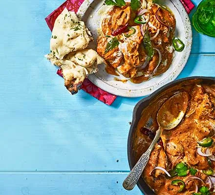

Old Delhi-style butter chicken Recipe

Ingredients
- Main Ingredients
- 800g boneless and skinless chicken thighs, cut into bite-sized pieces
- coriander leaves, finely sliced red onion, sliced green or red chilli, naan bread or basmati rice, and chutney, to serve
Preparation Time
Instructions